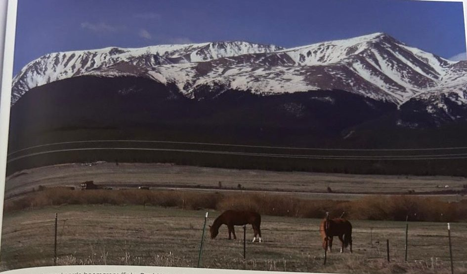
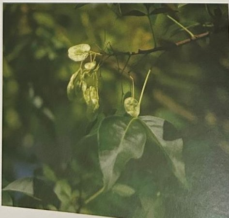

Groepen › Nieuwe Wereld
9. Colorado & New Mexico, Zuidelijk Rotsgebergte

Zuidelijker in het Rotsgebergte wordt het warmer en droger en de vegetatie past zich daaraan aan. Ook bij soorten die gemeenschappelijk zijn tussen het Kustgebergte en het Rotsgebergte worden overigens taxonomische varianten onderscheiden : zo spreekt men van de Groene Douglas enerzijds en de Blauwe Douglas anderzijds. De Draaiden uit het Kustgebergte wordt in het Rotsgebergte Murrayden. In de sparrenzone vinden we Engelmannspar en Coloradospar, de tweede met nog stijvere en scherpere naalden dan de eerste. De Coloradospar wordt ook wel Blauwe spar genoemd omwille van de vaak voorkomende blauwe schijn in de kroon – het kenmerk wordt in vele cultivars verdiept voor sierdoeleinden. Hij is niet te verwarren met de Coloradozilverspar die hier vanzelfsprekend ook op zijn plaats is. Enkele jonge Rotsgebergtejeneverbessen staan op de plek waar voorheen Rotsgebergtestekelden stond, een alpiene dwergdennensoort waarvan bekend is dat ze zeer oud kan worden, maar niet in Tervuren, want daar heeft ze het nauwelijks 25 jaar uitgehouden.
Uit het boek
2,76 ha · 28 soorten · 1347 bomen
- Een "moeilijke" groep: de soorten van de droge Rocky Mountains krijgen het hier lastig en moeten vaak vervangen worden.
- De blauwspar staat alleen in deze groep.


Bron: Geografisch Arboretum Tervuren. Een wereldreis rond bomen (2020), p. 124 en volgende.
Deelgroepen
- 9A – Zuidelijk Rotsgebergte A
- 9B – Zuidelijk Rotsgebergte B
Soorten in deze groep (28)
- Pseudotsuga menziesii var. glaucaBlauwe douglasspar · 436 bomen
- Picea engelmanniiEngelmannspar · 407 bomen
- Abies concolor var. lowiana92 bomen
- Picea pungensBlauwspar · 73 bomen
- Pinus contortaDraaiden · 71 bomen
- Abies concolorColoradozilverspar · 59 bomen
- Pinus ponderosa var. scopulorum38 bomen
- Fraxinus velutinaArizona-es · 32 bomen
- Populus trichocarpaWest-Amerikaanse balsempopulier · 32 bomen
- Salix exiguaSmalste wilg · 30 bomen
- Juniperus scopulorumRotsgebergtejeneverbes · 11 bomen
- Crataegus erythropoda6 bomen
- Pinus contorta var. murrayanaMurrayana den · 5 bomen
- Pinus ponderosaWesterse gele den · 5 bomen
- Acer glabrumRotsgebergte-esdoorn · 4 bomen
- Cladrastis kentuckeaGeelhout · 4 bomen
- Crataegus saligna4 bomen
- Pinus monticolaAmerikaanse witte den · 4 bomen
- Amelanchier utahensis3 bomen
- Pseudotsuga menziesiiGewone douglasspar · 3 bomen
- Ptelea trifoliataLederboom · 3 bomen
- Quercus mexicana3 bomen
- Sorbus scopulina2 bomen
- Cupressus arizonica1 boom
- Juglans microcarpaTexaanse walnoot · 1 boom
- Quercus buckleyi1 boom
- Quercus obtusata1 boom
- Rhododendron species1 boom
Tekst en foto: arboretum-tervuren.be (Koninklijke Schenking), met toestemming gebruikt.